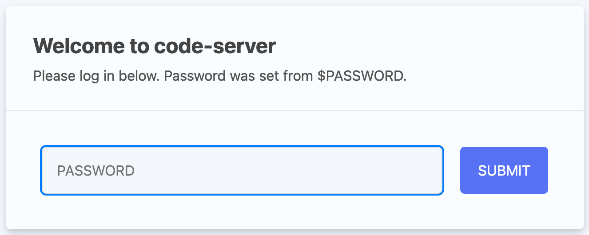
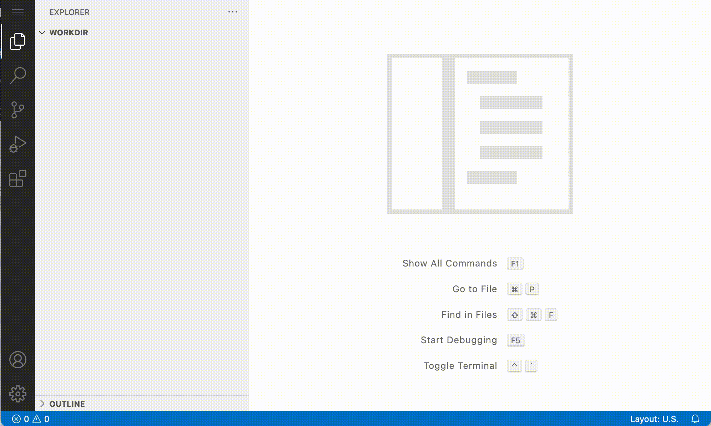
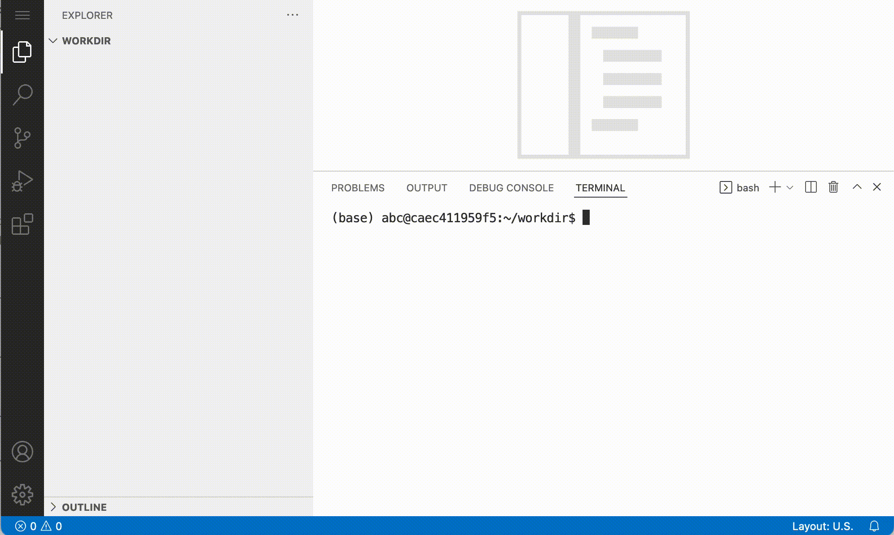

Server login
Learning outcomes¶
Note
You might already be able to do some or all of these learning outcomes. If so, you can go through the corresponding exercises quickly. The general aim of this chapter is to work comfortably on a remote server by using the command line.
After having completed this chapter you will be able to:
- Use the command line to:
- Make a directory
- Change file permissions to 'executable'
- Run a
bashscript - Pipe data from and to a file or other executable
- Program a loop in
bash
Choose your platform
In this part we will show you how to access the cloud server, or setup your computer to do the exercises with conda or with Docker.
If you are doing the course with a teacher, you will have to login to the remote server. Therefore choose:
- Cloud notebook
If you are doing this course independently (i.e. without a teacher) choose either:
- conda
- Docker
Exercises¶
First login¶
If you are participating in this course with a teacher, you have received a link and a password. Copy-paste the link (including the port, e.g.: http://12.345.678.91:10002) in your browser. This should result in the following page:

Info
The link gives you access to a web version of Visual Studio Code. This is a powerful code editor that you can also use a local application on your computer.
Type in the password that was provided to you by the teacher. Now let's open the terminal. You can do that with Ctrl+`. Or by clicking Application menu > Terminal > New Terminal:

For a.o. efficiency and reproducibility it makes sense to execute your commands from a script. With use of the 'new file' button:

Material¶
- Instructions to install docker
- Instructions to set up to container
Exercises¶
First login¶
Docker can be used to run an entire isolated environment in a container. This means that we can run the software with all its dependencies required for this course locally in your computer. Independent of your operating system.
In the video below there's a tutorial on how to set up a docker container for this course. Note that you will need administrator rights, and that if you are using Windows, you need the latest version of Windows 10.
The command to run the environment required for this course looks like this (in a terminal):
Modify the script
Modify the path after -v to the working directory on your computer before running it.
docker run \
--rm \
-p 8443:8443 \
-e PUID=1000 \
-e PGID=1000 \
--network host \
-e DEFAULT_WORKSPACE=/config/project \
-v $PWD:/config/project \
geertvangeest/ngs-variants-vscode
If this command has run successfully, use your browser to navigate to port 8443 on your local machine:
The option -v mounts a local directory in your computer to the directory /config/project in the docker container. In that way, you have files available both in the container and on your computer. Use this directory on your computer to e.g. visualise data with IGV. Change the first path to a path on your computer that you want to use as a working directory.
Don't mount directly in the home dir
Don't directly mount your local directory to the home directory (/root). This will lead to unexpected behaviour.
The part geertvangeest/ngs-variants-vscode is the image we are going to load into the container. The image contains all the information about software and dependencies needed for this course. When you run this command for the first time it will download the image. Once it's on your computer, it will start immediately.
If you have a conda installation on your local computer, you can install the required software using conda.
You can build the environment from environment.yml
Generate the conda environment like this:
The yaml file probably only works for Linux systems
If you want to use the conda environment on a different OS, use:
This will create the conda environment ngs-tools
Activate it like so:
After successful installation and activating the environment all the software required to do the exercises should be available.
A UNIX command line interface (CLI) refresher¶
Most bioinformatics software are UNIX based and are executed through the CLI. When working with NGS data, it is therefore convenient to improve your knowledge on UNIX. For this course, we need basic understanding of UNIX CLI, so here are some exercises to refresh your memory.
If you need some reminders of the commands, here's a link to a UNIX command line cheat sheet:
Make a new directory¶
Make a directory scripts within ~/project and make it your current directory.
File permissions¶
Generate an empty script in your newly made directory ~/project/scripts like this:
Add a command to this script that writes "SIB courses are great!" (or something you can better relate to..  ) to stdout, and try to run it.
) to stdout, and try to run it.
Answer
Generate a script as described above. The script should look like this:
Usually, you can run it like this:
But there's an error:
Why is there an error?
Hint
Use ls -lh new_script.sh to check the permissions.
Answer
gives:
There's no x in the permissions string. You should change at least the permissions of the user.
Make the script executable for yourself, and run it.
Answer
Change permissions:
ls -lh new_script.sh now gives:
So it should be executable:
More on chmod and file permissions here.
Redirection: > and |¶
In the root directory (go there like this: cd /) there are a range of system directories and files. Write the names of all directories and files to a file called system_dirs.txt in your working directory.
The command wc -l counts the number of lines, and can read from stdin. Make a one-liner with a pipe | symbol to find out how many system directories and files there are.
Variables¶
Store system_dirs.txt as variable (like this: VAR=variable), and use wc -l on that variable to count the number of lines in the file.
shell scripts¶
Make a shell script that automatically counts the number of system directories and files.
Loops¶
If you want to run the same command on a range of arguments, it's not very convenient to type the command for each individual argument. For example, you could write dog, fox, bird to stdout in a script like this:
However, if you want to change the command (add an option for example), you would have to change it for all the three command calls. Amongst others for that reason, you want to write the command only once. You can do this with a for-loop, like this:
Which results in:
Write a shell script that removes all the letters "e" from a list of words.
Hint
Removing the letter "e" from a string can be done with tr like this:
Which would result in:
Answer
Your script should e.g. look like this (I've added some awesome functionality):
#!/usr/bin/env bash
WORDLIST="here is a list of words resulting in a sentence"
for word in $WORDLIST
do
echo "'$word' with e's removed looks like:"
echo $word | tr -d "e"
done
resulting in:
'here' with e's removed looks like:
hr
'is' with e's removed looks like:
is
'a' with e's removed looks like:
a
'list' with e's removed looks like:
list
'of' with e's removed looks like:
of
'words' with e's removed looks like:
words
'resulting' with e's removed looks like:
rsulting
'in' with e's removed looks like:
in
'a' with e's removed looks like:
a
'sentence' with e's removed looks like:
sntnc
Like you might be used to in R or python you can also loop over lines in files. This can be convenient if you have for example a set of parameters in each line of a file.
Create a tab-delimited file animals.txt with the following contents:
Hint
If you're having trouble typing the actual 'tabs' you can also download the file here
With unix shell you can loop over the lines of that file and store each column as a variable. Below, the three columns in the tab delimited file are stored in the variables $animal, $behaviour and $leg_number:
Exercise: Modify the script in such a way that it writes the strings that are stored in the variables at each line to stdout.